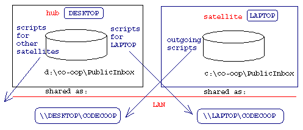
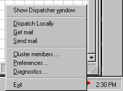

| |
|
|
 Code Co-op 3.0
Server-less Version Control System Code Co-op 3.0
Server-less Version Control System
|
| Script Dispatching |
|
Typical configurations for automatic script dispatching are the following, as illustrated in the image below:
- Developers are separated geographically and communicate through email.
- Developers have access to a peer-to-peer local network (LAN).
- A developer shares the project between work and home and transports scripts using diskettes (or other portable storage devices).

There are many variations and combinations of the above scenarios. In general, it is useful to think of the topology of a project in terms of a set of hubs and their satellites.
A hub machine serves as a dispatching center for a local cluster of machines (a hub and its satellites form a local cluster). If there is more than one hub, it communicates with other hubs using email. Within a cluster, scripts are exchanged between the hub and the satellites using a LAN or diskettes. The two extremes are:
- A totally distributed system consisting of hubs exchanging email.
- A totally centralized system with no email, a single hub and multiple satellites connected through LAN.
When installing Code Co-op, the Dispatcher will ask you a few questions. You'll have to decide whether you want to set up your computer as a hub or a satellite.
If Code Co-op is working in a Local Area Network (LAN), one directory, called the Public Inbox, will be shared with full access rights to everybody (you can modify the sharing settings from your operating system).

If you have already set-up your computer and would like to view or edit the dispatcher preferences,
open the Dispatcher and select Program/Preferences where you can start a wizard that will lead you through the process, or you can edit some settings directly.
|
|
|
|
Configuring a Hub
- Email access.
- If you want your hubs to communicate over email, you have to make sure your email program supports the Simple MAPI interface. Most programs do, but sometimes you have to turn this support on. For instance:
- In Outlook Express 4.x, go to the Tools/Options menu and select the option Make OutLook Express my default Simple MAPI client. You should turn off the Dispatcher while making this change.
- Outlook Express 5.0. You turn on Simple MAPI from the Internet Explorer. In its Internet Options dialog select the Programs tab and choose Outlook Express as your Mail application.
- Outlook 97 doesn't work correctly with long file names--your best bet is to get a free upgrade to Outlook 98 from Microsoft.
- Outlook 98. Try the same approach as with Outlook Express 5.0. If it doesn't work, you will have to install Corporate/Workgroup support. It's a setup option, but you can also add it later using the Add Components function.
- Netscape Communicator doesn't have full support for Simple MAPI, so you might have problems retrieving scripts automatically. In any case, configure your projects to use short file names (the default), because Netscape's long-file-name handling is peculiar.
- Eudora--you have to turn on full MAPI support. See Eudora MAPI FAQ.
In general, for automatic receiving of scripts, your email program has to be serious about Simple MAPI--not all of them are. Some e-mail programs overwrite each other's implementations of MAPI (mapi.dll and mapi32.dll in the system32 directory). For instance, when you install Internet Explorer with Outlook Express, it will overwrite your Eudora MAPI dlls. To fix that, close all apps that use MAPI, uninstall Outlook, delete MAPI dlls from system32 and restart Eudora (it will restore its dlls on startup).
The Dispatcher offers a simple test that will determine whether your email program will collaborate with it. Select Diagnostics from the Dispatcher's context menu.
You also have a choice between automatic and manual emailing (Dispatcher's Program/Preferences). When your Dispatcher is on automatic, it will email scripts immediately after they are generated. On manual, you have to select Send mail from the Dispatcher context menu every time you want to send email. The advantage of manual mode is that the Dispatcher will have more opportunity to combine multiple scripts into one email, whenever their recipient lists are identical.
Receiving emailed scripts can be triggered manually or you can set up the dispatcher to periodically check for new email. In manual mode, you have to select Get mail from Dispatcher's context menu. The Dispatcher will then talk to your email program (using Simple MAPI) and scan the Inbox for unread messages with the title "Code Co-op Synch Scripts." If you inadvertently "read" such a message in your Inbox, you can always mark it "unread" in your email program. In automatic mode, the dispatcher will do this automatically at intervals that you set up. Warning: some of the email clients have memory leaks (notably Outlook Express) which, in automatic mode, might eventually use up your memory and cause the dispatcher to stop working. Closing it and restarting the dispatcher every few days (if you don't turn off your computer for the night) will alleviate the problem.
For advanced users, the Dispatcher has the option of running a user program (for instance pkzip or PGP for file compression or encryption) over the scripts before sending and after receiving them. In Dispatcher's Program/Preferences push the Script Processing button and follow the instructions. We tested this option with pkzip 2.5, and that's the example given in the Script Processing options. Pkzip is a shareware compressor, available from PKWARE (select the command-line version). We also tested it with PGP.
If the Dispatcher is not able to retrieve scripts from your email program, you are left with the option of saving attachments manually. In your email program, simply open the "Code Co-op Synch Scripts" message and Save Attachments. Save them directly to the Code Co-op's Public Inbox--the Dispatcher will then take over and dispatch them further.
- Satellite Communications.
- The hub receives scripts from its satellites in its shared public inbox. It forwards them to other project members either directly or by email. For the Dispatcher to send scripts back to a Satellite, it has to know the Forwarding Path for each Satellite user and project (You can view and edit the list of Satellite Members on a hub from the context menu). If the satellite users configured their dispatchers correctly and the sharing of their their public inboxes was successful, the hub dispatcher will receive this information with every Join request, and it will know how to forward scripts to such users.
Otherwise, whenever a script arrives from an unknown cluster member, the Dispatcher will ask you for this user's forwarding path. There are three types of forwarding folders.
- On a LAN, select the satellite's shared Public Inbox. Your network has to support peer-to-peer communications and file sharing (support for this is built into Windows, you might have to turn it on, though).
- You may also specify a diskette drive as your forwarding folder. Scripts will be copied to a diskette, which you will then manually carry to the satellite computer. Once at the satellite, copy the scripts into its public inbox folder and let the Dispatcher take over (you might want to create links to your public inbox on the desktop to simplify this process). You may specify different subdirectories on the diskette for different satellites, so that you don't confuse the scripts.
- Alternatively, you can specify any directory on your machine as the forwarding folder. At the end of the day you may copy the accumulated scripts from that directory onto a diskette or a zip drive and take them home to your satellite.
|
|
|
|
Configuring a Satellite
On a satellite, you only specify one Forwarding Folder, either during setup, or from the Dispatcher's Program/Preferences menu. All outgoing scripts will be copied there. You have the following choices:
- If you're on a network, specify the Hub's shared Inbox Folder, for instance \\MYHUB\CODECOOP.
- Otherwise specify a diskette path, e.g., "a:\forward". You'll have to carry the diskette to the hub and copy the scripts to its Public Inbox folder.
- Of course, it's also possible to specify a directory on your own hard disk as the forwarding folder and later manually copy the accumulated scripts from there to a diskette or a zip drive.
|
|
|
|
Working with the Dispatcher
Other than during the initial setup, the Dispatcher should be as unobtrusive as possible. You will see its icon on your taskbar . When this icon turns red and with arrows, it means that there are some scripts waiting to be dealt with. If you double-click on the Dispatcher icon, a window will pop up (see the screenshot). It contains the list of your local projects and the count of incoming and outgoing scripts for each of them. The first item on the list corresponds to the Code Co-op's Public Inbox. You can further double-click on any of the items to see the list of waiting scripts for that project. Double-clicking on a script will show you the details for that script (such as project, sender, recipients, etc.).


When you see incoming scripts in any of the projects, fire up Code Co-op and visit that project to unpack the scripts. Outgoing scripts are usually automatically dispatched, unless you're on a hub with emailing set to manual. In that case, select Send mail from the All menu, or from the Dispatcher's context menu, which pops up when you right-click on its icon. The context menu on a hub also contains the Get mail command that lets you retrieve scripts directly from your email program.
|
|
|
Code Co-op User's manual. Copyright © 1999, 2000 Reliable Software. |